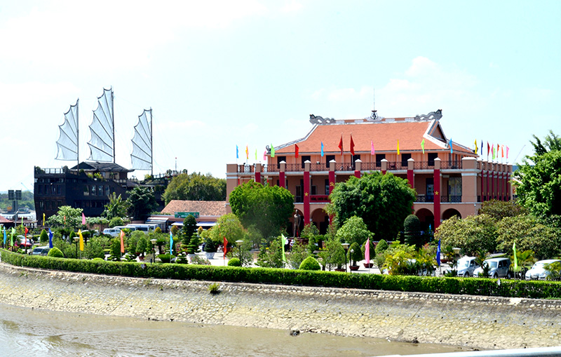
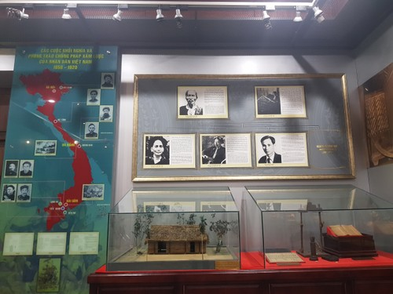
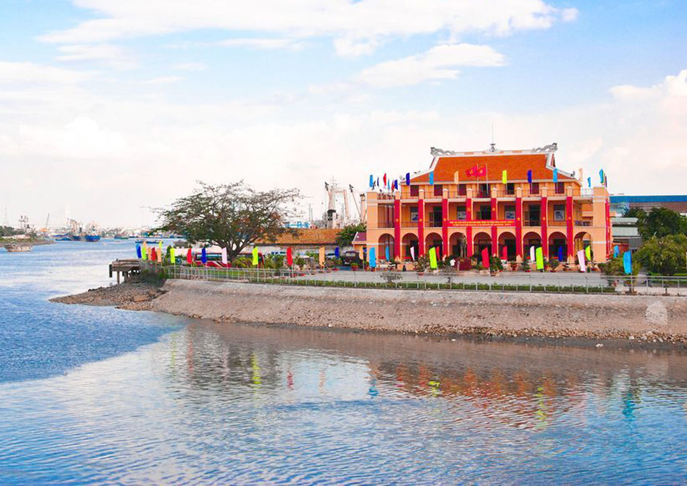
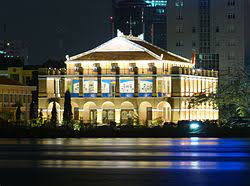
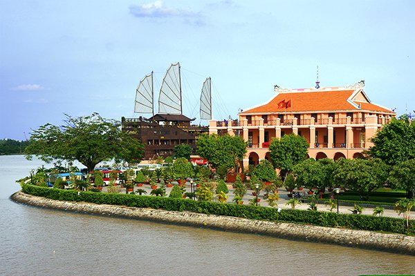

Bến cảng Nhà Rồng là di tích lịch sử nổi tiếng, gắn liền với hành trình đi tìm đường cứu nước vĩ đại của Chủ tịch Hồ Chí Minh. Trước đây, nơi này từng là trụ sở của thương cảng Sài Gòn, được thực dân Pháp xây dựng từ năm 1863. Chính tại bến cảng này, vào ngày 5/6/1911, Bác Hồ đã lên con tàu Amiral Latouche Tréville rời Việt Nam sang Pháp và bắt đầu cuộc hành trình làm nên những chiến thắng vĩ đại cho dân tộc. Chính vì vậy, nơi đây mang một ý nghĩa lịch sử vô cùng quan trọng và trở thành một biểu tượng của thành phố mang tên Bác. Khi chiến tranh tại miền Nam kết thúc, bến cảng này do chính quyền miền Nam Việt Nam quản lý. Sau đó, họ đã tu sửa và cải tạo lại công trình với 4 khu vực chính là bảo tàng Hồ Chí Minh, tượng đài Bác, khuôn viên bến cảng và đài phun nước. Người dân địa phương thường gọi bảo tàng là “Nhà Rồng” và bến cảng gần đó là “bến Nhà Rồng”.
Riêng khu vực bảo tàng Hồ Chí Minh có diện tích hơn 1.500m2 với 1 tầng trệt, 2 tầng lầu và 9 phòng trưng bày. Phần mái của công trình được thiết kế theo kiểu “Lưỡng long chầu nguyệt” thường thấy ở đền chùa Việt Nam. Ngày nay, nơi này là một chi nhánh của hệ thống các bảo tàng và di tích về Chủ tịch Hồ Chí Minh, nơi lữu giữ nhiều tư liệu, hình ảnh và hiện vật giá trị về hoạt động cách mạng của Người.
Với vị trí đắc địa nhìn thẳng ra sông Sài Gòn, bến cảng sở hữu khuôn viên vô cùng rộng rãi và thoáng đạt. Chính vì vậy, khi đi tản bộ quanh đây, bạn sẽ cảm nhận được những làn gió mát lành từ sông thổi vào, giúp xua đi tiết trời nắng nóng ở Sài Gòn. Bầu không khí yên tĩnh nơi đây cũng sẽ khiến những phút giây nghỉ ngơi của bạn trọn vẹn hơn và tạm quên đi những xô bồ nơi phố thị.
Hiện tại, bảo tàng Hồ Chí Minh ở bến Nhà Rồng có 9 phòng trưng bày, trong đó có đến 6 phòng lưu trữ các hiện vật và tư liệu giá trị về Chủ tịch Hồ Chí Minh. Các gian trưng bày được sắp xếp theo 5 chủ đề khác nhau, cụ thể:
Bến cảng Nhà Rồng chỉ mở cửa cho du khách tham quan từ thứ 3 đến Chủ Nhật và không đón khách vào thứ 2. Giờ hoạt động từ 7h30 đến 11h30 sáng và từ 13h30 đến 17h30 chiều.
Khi đến đây, bạn sẽ phải mua vé vào cổng với giá 20.000VND/ người và vé gửi xe 2.000VND/ xe nếu bạn di chuyển bằng phương tiện cá nhân. Tuy nhiên, nếu là học sinh, sinh viên thì sẽ được miễn phí vé tham quan.
Bến cảng Nhà Rồng nằm ở số 1, đường Nguyễn Tất Thành, thuộc phường 12, quận 4. Nếu muốn tranh thủ ghé thăm các điểm tham quan khác gần đó, bạn nên thuê xe máy tự lái đến địa điểm này. Ngoài ra, bạn cũng có thể di chuyển bằng xe buýt với 4 tuyến đi qua địa điểm này là tuyến số 02, 03, 19 và 56.
